Introduction
Human beings have travelled a long way from the early days of hunting and foraging, when the only real dietary question was whether a given plant or animal was safe to eat at all. Over the tens of thousands of years since, that simple question branched in two very different directions. Some branches took root in the mind and in community — in the moral and religious convictions that decided which foods a person would or would not eat, regardless of whether the body could tolerate them. Other branches took root in the body itself, as long stretches of history, geography, and diet slowly reshaped human metabolism, leaving different populations able to digest some foods easily and others only with difficulty, or not at all. The result, today, is a humanity whose dietary needs are no longer one story but many: needs shaped by philosophical and religious conviction, as they are for the Jain community's centuries-old practice of non-violence at the dinner table, and needs shaped by the body's own tolerance, or intolerance, of a single family of proteins found in ordinary wheat, barley, and rye. These two divergent needs — one born of belief, the other of biology — sit at the heart of how a great many people eat today, and each is worth understanding in its own right, starting with the older of the two.
Introduction · AThe Jain Community: Ahimsa and the Ethics of Eating
Jainism is one of the world's oldest living religious and philosophical traditions, tracing its lineage through twenty-four Tirthankaras — spiritual teachers who are said to have attained liberation and shown the path to others — the last of whom, Mahavira, lived in the sixth century BCE and shaped much of Jain practice as it is known today. At the center of Jain thought sits a single, demanding idea: that every living being, no matter how small or how seemingly insignificant, possesses a soul and deserves protection from harm. This principle is called ahimsa, non-violence, and it is not treated as one virtue among many but as the organizing idea from which nearly every other Jain practice follows.
Ahimsa in Jain philosophy is deliberately expansive. It is not limited to physical violence against visible creatures; it extends to violence in speech, in thought, and in the quiet, cumulative harm caused by careless daily habits. Jain monks and nuns take this to a striking practical extreme — some sweep the ground ahead of their footsteps to avoid crushing insects, and filter their drinking water to avoid harming microscopic organisms living in it. Alongside ahimsa, Jain ethics rests on two other closely related ideas: aparigraha, non-possessiveness, which teaches that attachment to material things and to the desire for more is itself a subtle form of violence against one's own spiritual progress; and anekantavada, the doctrine of non-absolutism, which holds that no single person can ever grasp the whole of a complex truth, and that this incompleteness of any one viewpoint is exactly why humility, tolerance, and open dialogue must accompany firm belief. Together these three ideas are traditionally formalized into five vows — ahimsa, satya (truthfulness), asteya (non-stealing), brahmacharya (chastity, or fidelity within a marriage), and aparigraha — which Jain monastics observe in their complete form and which lay Jain householders observe in a moderated, partial form suited to family and working life.
Food is one of the places where this philosophy becomes a daily, concrete practice rather than an abstract belief. A Jain diet is strictly vegetarian and excludes meat, fish, eggs, alcohol, and honey (the last because its harvesting is understood to harm bees). More distinctively, observant Jains also avoid root and underground vegetables — onion, garlic, potato, carrot, and similar tubers among them — along with certain fruits believed to contain countless minute life forms in a single bite. The reasoning behind this is precise rather than arbitrary: pulling a root vegetable out of the ground kills the entire plant rather than harvesting a fruit that regrows, and it disturbs and destroys the uncountable, invisible organisms living in the soil around the root. Jain scripture describes certain foods as anantkaya, meaning they are believed to house infinite souls in a single form, which is what places them under the strictest caution. Because Jain practice recognizes that not every household observes every rule with the same intensity — some families are strict about avoiding all root vegetables and fermented foods in every circumstance, while others follow a more moderate, lay interpretation of the same principles — this app is deliberately built to reflect that spectrum rather than to flatten it into one rigid standard. It offers a "strict observance" setting precisely so a household can calibrate the analysis to match how they actually practice their faith, rather than imposing a single outside definition of what counts as Jain-friendly.
Introduction · BUnderstanding Gluten and Why a Gluten-Free Diet Matters
Gluten is the name given to a family of proteins found in wheat, barley, rye, and closely related grains. It is what gives bread its chew and dough its elasticity, and for the great majority of people who eat it, gluten is entirely harmless. For a meaningful minority of people, however, gluten is the trigger for a real and sometimes serious medical problem, and the size of that minority is larger, and more medically varied, than most casual conversation about "gluten-free" diets tends to suggest.
The most clearly defined of these conditions is celiac disease, an autoimmune disorder in which eating gluten causes the body's own immune system to attack the lining of the small intestine. Population studies estimate that celiac disease affects roughly one to one and a half percent of people worldwide, and left unmanaged it can damage the small intestine's ability to absorb nutrients, producing effects that reach well beyond digestion. Distinct from celiac disease is non-celiac gluten sensitivity, a condition in which a person experiences genuine, sometimes significant symptoms after eating gluten — without the intestinal damage or the specific antibody markers that define celiac disease. Non-celiac gluten sensitivity is currently identified mainly by its outcome: symptoms that improve when gluten is removed from the diet, once celiac disease and a separate condition called wheat allergy have both been ruled out. Researchers estimate its prevalence at anywhere from under one percent to well over ten percent of the population depending on the country and the study, a wide range that itself reflects how differently gluten can affect different bodies. Wheat allergy, in turn, is a third and separate category again — a more conventional allergic reaction to proteins in wheat, mediated by a different part of the immune system entirely, and not something that necessarily involves the gluten protein specifically.
What all three conditions share is a single practical consequence: the only reliable treatment, recognized as the standard of care, is strict avoidance of gluten in the diet. That sounds simple until one actually tries to do it consistently from a grocery shelf. Gluten hides inside ingredients that give no obvious clue to their origin — malt extract, modified food starch, soy sauce brewed with wheat, and a long list of stabilizers and flavorings that manufacturers are not always required to spell out in plain language. A single missed word on a label can undo weeks of otherwise careful eating, and for someone managing celiac disease in particular, that is not a matter of mild discomfort but of ongoing, invisible damage. This is precisely the kind of careful, rule-based label reading this app was built to perform reliably, every time, so that the person doing the shopping does not have to memorize every hidden alias gluten can travel under.
Introduction · COur Objective and Aspiration
Every meal built around a set of dietary convictions or constraints begins with a small act of trust — trust that the words printed on a label are complete, honest, and legible enough to understand. For most shoppers that trust is a background formality. For a Jain household following the vows described above, or for someone whose body reacts to a trace of hidden gluten, that same label is a checkpoint that decides whether the next meal is acceptable at all, and reading it well is a genuinely specialized skill. A shopper has to recognize that "mono- and diglycerides" can be animal-derived, that "natural flavoring" reveals nothing about its actual source, that "malt extract" is a grain derivative that does not announce the word wheat, and that a single E-number can stand for a dozen different substances depending on which one a manufacturer happened to use that week. Few people carry this kind of ingredient literacy into a grocery aisle, and fewer still can apply it quickly and consistently, scan after scan, item after item.
The objective of this app is built directly around that gap. Given a photograph of an ingredient label, a scanned barcode, or a plainly described food item, it applies a clear, consistent, and transparent set of dietary rules — Jain, gluten-free, or both at once — and returns a verdict a shopper can act on in the time it takes to stand in a supermarket aisle. Everything else it does, from batch-scanning a whole cart's worth of items to keeping a searchable history of past scans, exists in service of that one moment of decision.
The aspiration behind it is broader still. It is to make principled and careful eating less exhausting to sustain — not by replacing anyone's judgment, tradition, or medical guidance, but by handling the tedious, error-prone part of the task: reading dense, jargon-filled text quickly and the same way every time, regardless of how rushed or tired the shopper is that day. A Jain household managing both strict and lay observance under one roof, a person newly diagnosed with celiac disease still learning where gluten hides, a caregiver shopping for a family member whose needs differ from their own — these are the same underlying problem wearing different clothes: too much information, printed too small, to reliably parse by hand every single time. If this app makes that problem noticeably smaller for even one shopper standing in one aisle, it has done its job.
Introduction · DA Note on Humility: What This App Is, and What It Isn't
None of the above is a substitute for saying, plainly, what this app is not. It is not a religious authority, and it does not issue rulings on what is or is not permissible under Jain law — it applies a documented, versioned set of rules as consistently as it can, and a family's own religious guidance always takes precedence over its output. It is not a medical device or a doctor, and it does not diagnose celiac disease, gluten sensitivity, or any other condition — anyone managing a real medical diagnosis should rely on their physician and, where relevant, on food that carries a certified gluten-free label, not solely on an AI-generated reading of a photograph. And because it relies on artificial intelligence to read an image and reason about it, it can be wrong: a label can be blurry, an ingredient can be misread, and a model can occasionally misjudge an ambiguous case. This is why every result this app produces is shown alongside a plain, repeated reminder to verify independently — because the goal was never to remove human judgment from the process, only to give it a faster, better-informed place to start. The rest of this manual explains, screen by screen, how to put that starting point to use.
Using the App
With the thinking behind the app out of the way, this chapter is about the app itself: what's on screen, how to get set up, and how to run your first scan. It stays deliberately light on detail in places — a full breakdown of every result field lives later, in Appendix A.
Using the app · AGetting Started
What's On Screen
Almost every screen in the app shares the same simple top bar: a back arrow on the left when you're not on Home, the app's icon and name in the center (tap it any time to open the About screen), and a ☰ menu icon on the right that opens the hamburger menu described later in this chapter.
Home itself is the starting point for everything else. Below a short instruction line and a chip showing your currently selected AI provider, four large buttons make up a 2×2 grid:
- Scan label — opens the live camera to photograph an ingredient panel.
- Choose from gallery — picks an existing photo instead of taking a new one.
- Batch — queues up several photos to analyze together, later, in one pass.
- Check by name — skips the photo entirely and analyzes a typed item or dish.
Underneath the grid sits the AI disclaimer, which appears throughout the app: a reminder that results are AI-generated and should be verified independently.
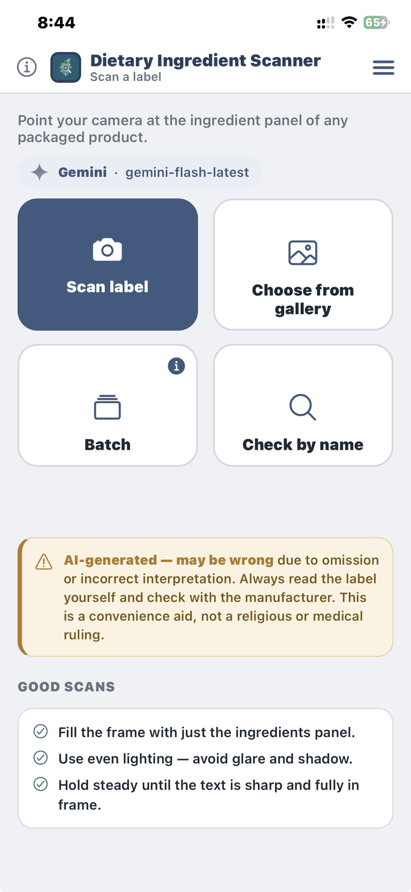
Before Your First Scan: Adding an API Key
This app doesn't have its own server or account system. Instead, it connects directly, from your phone, to an AI provider using an API key that belongs to you — the same kind of key a developer would use to build their own app. Your key is stored securely on your device and is never sent anywhere except directly to the provider you choose.
The first time you open the app, it will ask you to set this up before you can do anything else. The steps below use Google Gemini as the example, since it's a fast, free way to get started. If you'd rather use Anthropic Claude, OpenAI, or NVIDIA NIM instead, the same idea applies to each — see Appendix B: Settings for the specifics of the other three.
- On the setup screen, choose Gemini from the row of provider options.
- Tap How to get an API key? — this opens Google AI Studio in your browser (aistudio.google.com).
- Sign in with a Google account, then choose Get API key and create a new key.
- Copy the key, switch back to the app, and paste it into the API key field.
- Optionally tap Test connection to confirm the key works before moving on.
- Choose which diet(s) you want the app to check for — Jain, Gluten-Free, or both. You can change this later at any time.
- Tap Get started.
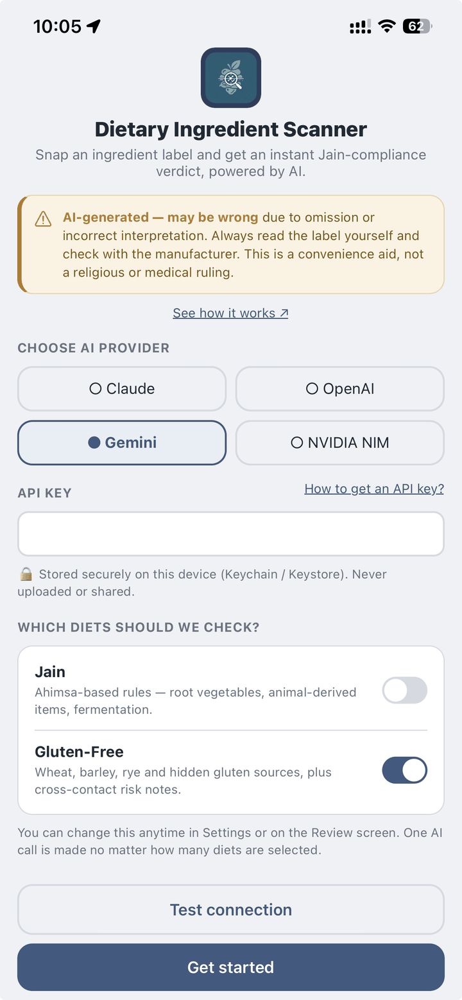
Using the app · BYour First Scan
With a key in place, you're ready to scan something. The most common path starts with the camera.
- From Home, tap Scan label. This opens the live camera.
- Frame the ingredient panel in the viewfinder. If you need to get closer to a small label without losing focus, pinch with two fingers to zoom in digitally instead of moving the phone closer.
- While you're framing the shot, the app is also quietly checking for a barcode in the background. If it recognizes one, a small banner appears telling you the product it matched. You don't need to do anything differently — just take the photo as you normally would.
- Tap the shutter button to capture the photo.
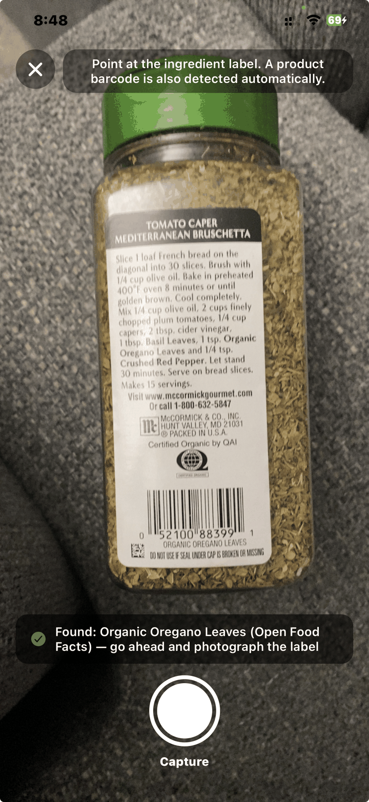
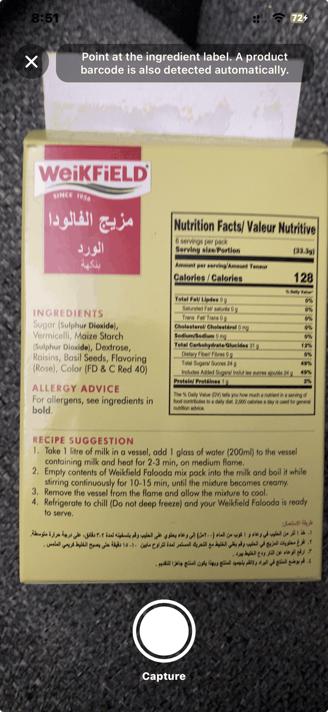
You'll land on the Review screen next, showing the photo you just took.
- Check the product name field — it's often filled in automatically (from the label or a barcode match), but you can edit or clear it.
- Tap Analyze.
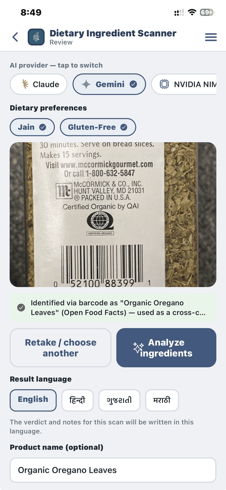
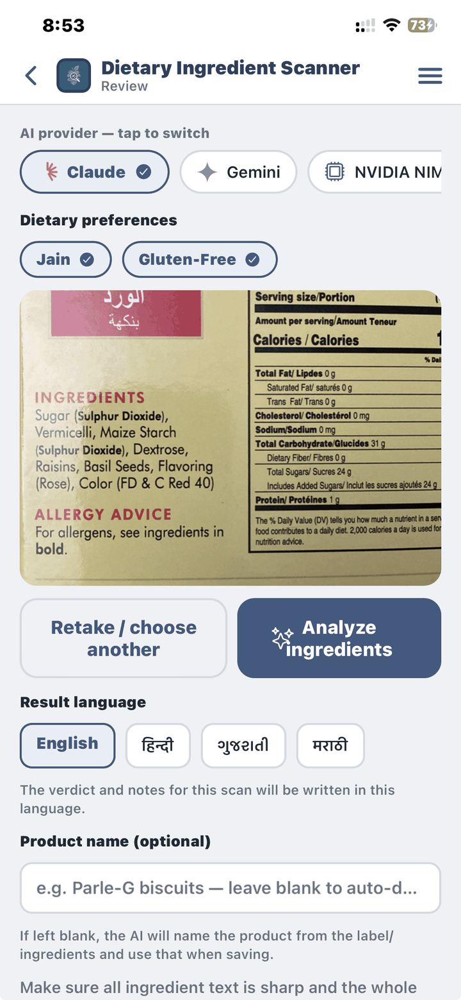
A short wait screen appears while the app reads the label and checks it against your selected diet(s). When it finishes, you'll land on the Result screen.
At a glance, the two things worth knowing right away are:
- The verdict card at the top — colored green, red, or amber, with an icon and a short label like "JAIN-FRIENDLY," "NOT GLUTEN-FREE," or "CANNOT CONFIRM." If you selected two diets, you'll see one card per diet, stacked.
- Confidence — shown just below the verdict, telling you how sure the model is (High, Medium, or Low).
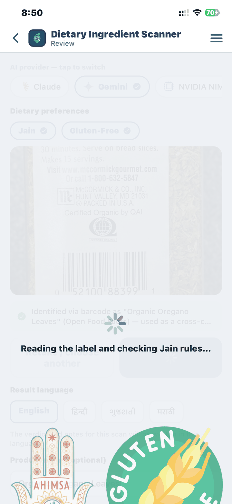
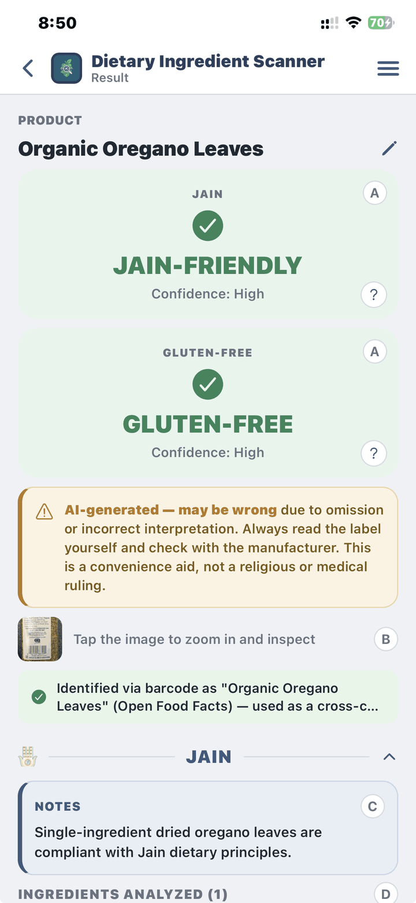
That's enough to make sense of your first result. Everything else on this screen — the ingredient list, problematic ingredients, risk context, and more — is explained in full in Appendix A: Understanding Your Results, later in this manual.
If you'd rather analyze a photo you already have instead of taking a new one, tap Choose from gallery on Home instead of Scan label in step 1 — everything from the Review screen onward works exactly the same way.
Using the app · COther Ways to Analyze
Scanning one label at a time isn't always the most convenient option. The app offers two other paths.
Batch Processing
If you're shopping and don't want to wait for each analysis before moving to the next item, the Batch queue lets you collect several photos first and analyze them all together, later.
- From Home, tap Batch.
- Add photos with Add photo (camera) or Gallery, one item at a time. Each item can be renamed, and barcodes are detected automatically here too.
- When you're ready, tap Process all to analyze every queued item in one pass, with a progress indicator showing which item is currently being checked.
- Finished items are saved to your History as a batch; anything that fails stays in the queue so you can retry it.
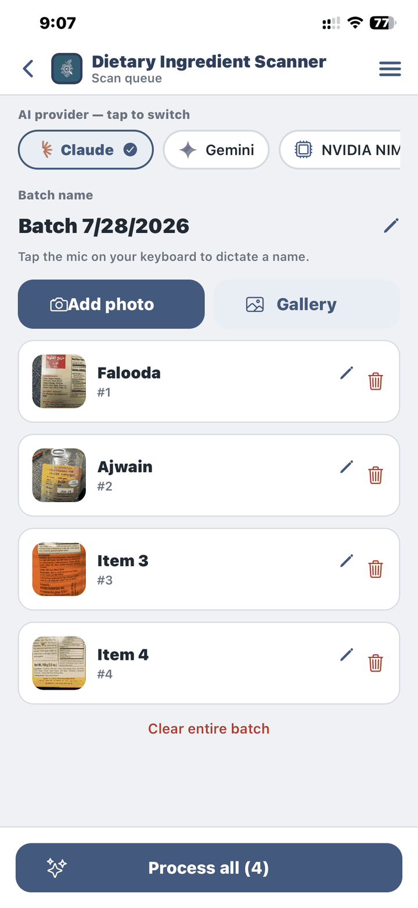
Check by Name
Sometimes you don't have a label to photograph at all — you just want to know about a dish or a packaged item by name.
- From Home, tap Check by name.
- Type an item or dish, such as "palak paneer" or "digestive biscuits."
- Tap Check compliance.
Behind the scenes this takes two steps — first identifying likely ingredients for what you typed, then checking those ingredients against your selected diet(s) — but from your side it's a single tap. The result screen that follows works exactly like a photo scan's.
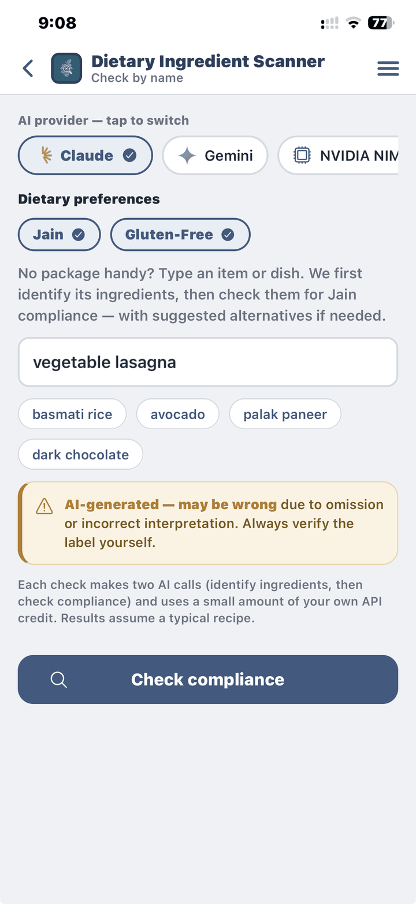
Using the app · DAdditional Features
A few more things are worth knowing about once you're comfortable with the basics.
Switching AI Provider
If you've added keys for more than one provider, a row of small chips appears near the top of Home, Review, Check by name, and the Batch queue. Tap a chip to switch providers on the fly — useful if one provider is slow or temporarily unavailable.
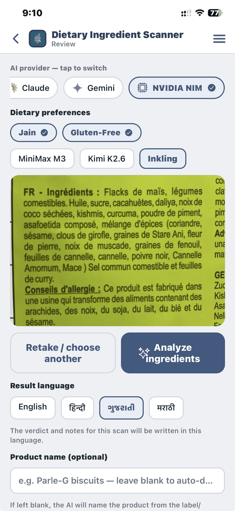
Transparency — Seeing the Exact Prompt and Response
Every Result screen has a collapsible More details section. Opening it shows the verdict legend, and — nested inside — the exact instructions that were sent to the AI and the raw response it sent back, along with timing and token-usage information. Nothing about how a verdict was reached is hidden.
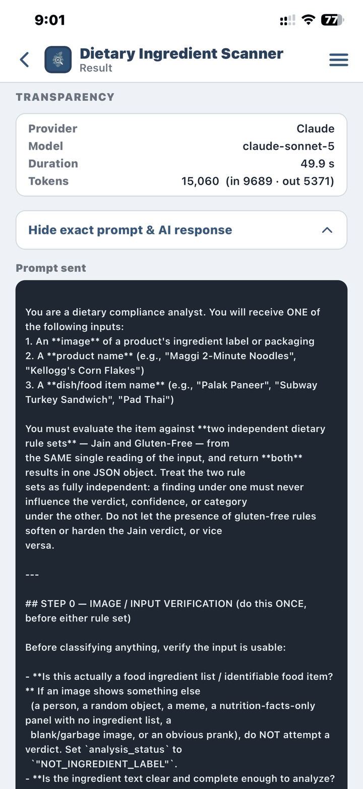
Sharing a Result
Tap Share result on any Result or History record to open a short chooser: share a plain text summary, the summary plus the full prompt and response (handy if you want a second opinion from someone else), or just the photo itself.
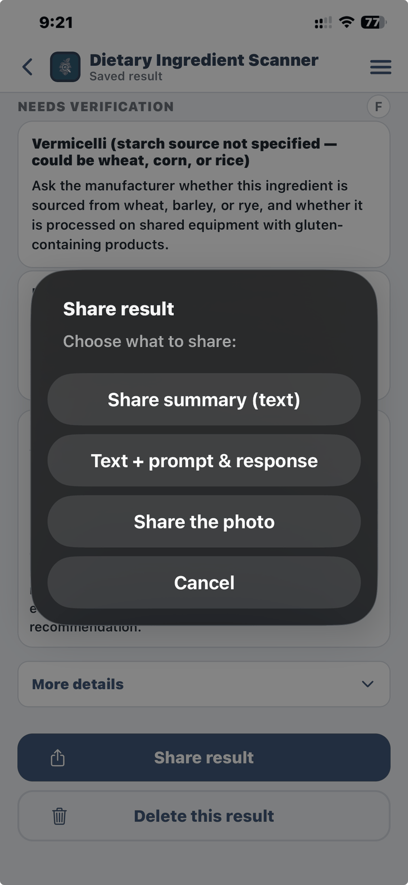
History
Every completed scan, batch, and check-by-name result is saved automatically. Open History from the hamburger menu to browse past results, grouped by date, with a search bar and verdict filters at the top. Tap any entry to see its full detail again, rename it, or delete it; swipe or use Select to remove several at once.
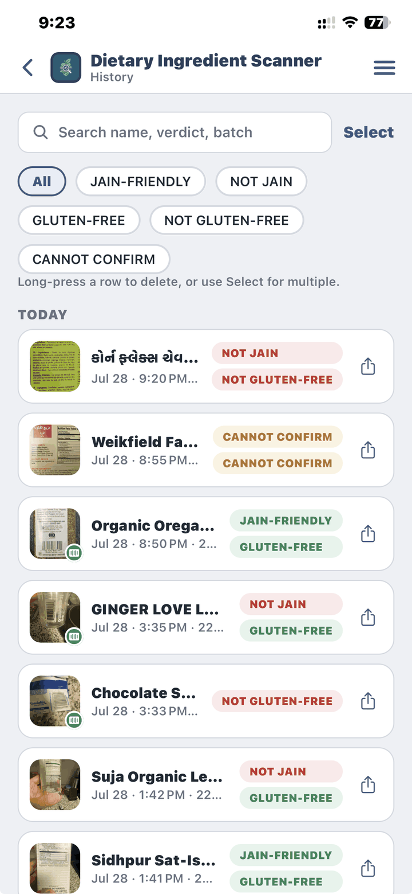
About Screen
Tapping the app icon or name in the top bar (from any screen) opens About — a short explanation of the app's purpose for Jain compliance, Gluten-Free compliance, and the barcode feature, along with the version number and the disclaimer.
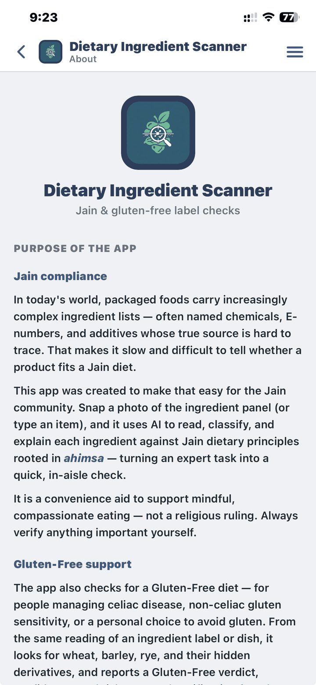
Hamburger Menu
The ☰ icon in the top-right corner of every screen opens a short menu: Home, History, Change model, Settings, Understanding results, and How it works. It's the fastest way to jump anywhere in the app without backing out screen by screen.
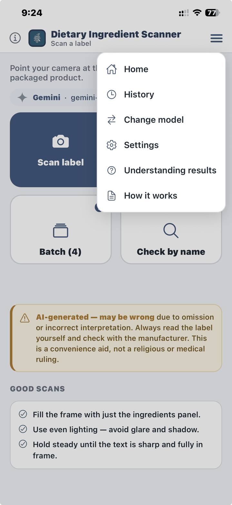
That covers day-to-day use of the app. For the details left out along the way — exactly what each part of a result means, the full Settings screen, language options, and what happens when something goes wrong — turn to the Appendix.
Appendix
Appendix · AUnderstanding Your Results
This chapter walks through every part of a Result screen in order, top to bottom. The app also has its own in-app version of this explanation — open Understanding results from the hamburger menu at any time for a quick, on-device reference to the same categories described here.
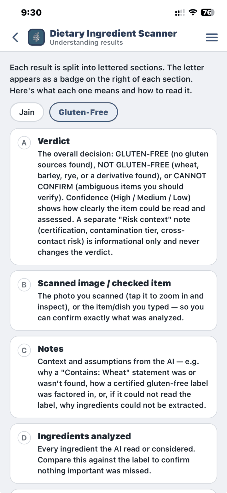
Most sections on the Result screen carry a small lettered badge in the app itself, in the corner of the section. Where a section has one, it's called out below (A, B, C, and so on) so you can match what's in this manual to exactly what's on your screen. A few sections — Confidence, Risk context, and More details — don't carry their own badge in the app, and that's noted where relevant.
Product name. Shown at the top, editable by tapping the pencil icon. It's filled in automatically from the label or a barcode match when possible, but you're always free to rename it — the name you choose is what's used later in History. (No badge — this sits above the lettered sections.)
A — Verdict card. The large colored card just below the product name is the headline result for one diet. Green means the item complies with that diet's rules; red means it doesn't; amber ("CANNOT CONFIRM") means the label didn't give the model enough to decide either way. If you checked two diets at once, you'll see two cards stacked, each labeled Jain or Gluten-Free, and each can be collapsed or expanded independently by tapping the small divider between them. A small "?" button on each card opens the in-app guide for that specific diet.
The full legend — every color and label you might see on a verdict card — is:
| Color | Label | Diet | Meaning |
|---|---|---|---|
| 🟢 Green | JAIN-FRIENDLY | Jain | The ingredients comply with Jain dietary rules. |
| 🔴 Red | NOT JAIN | Jain | One or more ingredients violate Jain dietary rules. |
| 🟢 Green | GLUTEN-FREE | Gluten-Free | No gluten-containing ingredients were found. |
| 🔴 Red | NOT GLUTEN-FREE | Gluten-Free | One or more gluten-containing ingredients were found. |
| 🟡 Amber | CANNOT CONFIRM | Jain or Gluten-Free | The label didn't give the model enough information to decide either way. |
Confidence. Printed under the verdict itself — High, Medium, or Low — this reflects how clearly the label supported the verdict, not how strict the rule was. (No badge of its own — it's part of the same "A" verdict card.)
| Confidence | What it means |
|---|---|
| High | The label was clear and complete enough that the verdict is well supported by what was read. |
| Medium | The verdict is reasonably supported, but something about the label was slightly incomplete, hard to read, or open to more than one interpretation. |
| Low | The verdict is a best effort — the label was missing information, poorly worded, or otherwise made the model's read of it uncertain. Worth double-checking the label yourself before relying on this result. |
B — The photo, or the item you typed. Just below the disclaimer, you'll see either your photo (tap it to zoom in) or the text you typed for a name-based check. If a barcode was involved, a small chip here shows whether it matched a product in the Open Food Facts database.
C — Notes. Any free-text notes the model wants to surface about the analysis as a whole — for example, an assumption it made, or a caveat about how it read the label.
D — Ingredients analyzed. A row of small chips listing every ingredient the model was able to read or extract.
E — Problematic ingredients. Listed with a letter of its own (A through E) and a short reason — note that this is a different lettering from the section badges: it's a rule category defined in that diet's rule set, not a section number. For example, Category A in the Jain rules covers ingredients that are absolutely prohibited, like meat or honey, while later categories cover things like root vegetables or ambiguous additives. The in-app "Understanding results" guide explains what each rule-category letter means for each diet in full.
F — Needs verification. Ingredients the model couldn't classify with confidence, shown with a suggested question you could put to the manufacturer if you wanted a definitive answer.
G — Suggested alternatives. When a result isn't fully compliant, this section proposes compliant swaps — for example, asafoetida (hing) in place of onion and garlic for Jain cooking.
H — Unreadable portions. Any part of the label the model genuinely couldn't read.
Risk context (Gluten-Free only). A separate, clearly distinct box that appears only for Gluten-Free results, after the lettered sections. It notes things like whether a certified gluten-free label was found on the product and the estimated risk of cross-contact with gluten during manufacturing. This section is informational — it explains general risk factors, not a personal medical judgment about your own tolerance, and it never changes the verdict above it. (No badge.)
More details. A collapsible section holding the verdict legend (a quick key to what each color and label means) and, nested inside it, the full Transparency block: the exact prompt sent to the AI and the raw response it returned, along with which provider and model answered, how long it took, and how many tokens were used. (No badge.)
A complete Result screen, scrolled from top to bottom, looks like this — shown here as a six-part sequence since it doesn't fit in one frame:
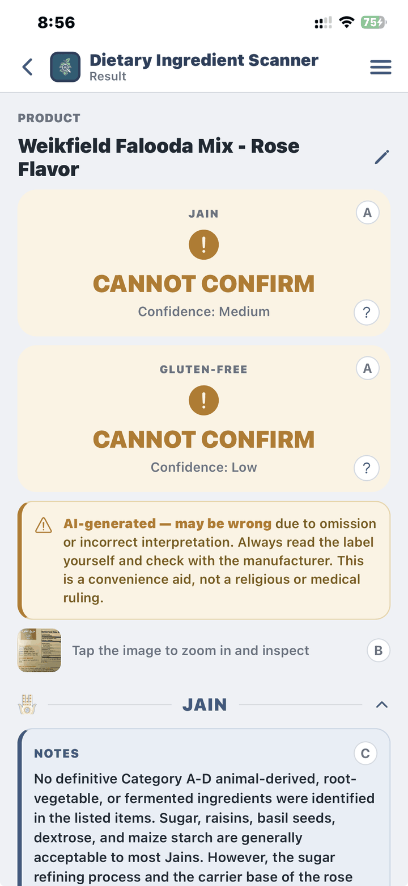
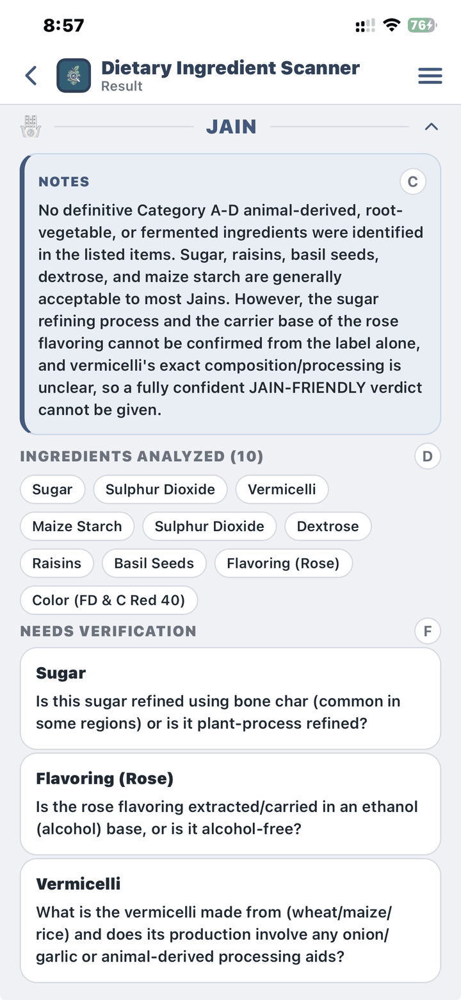
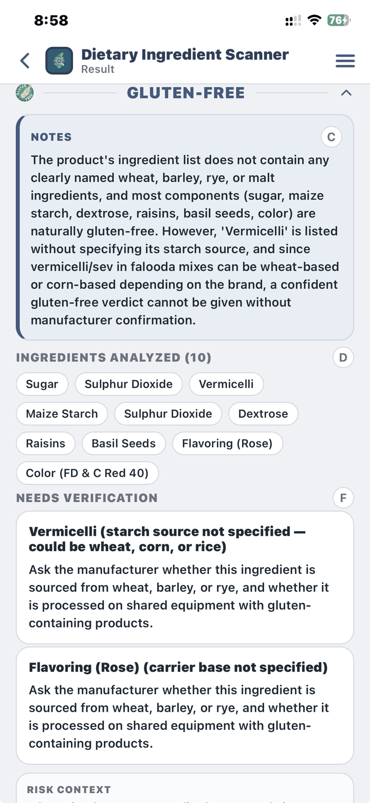
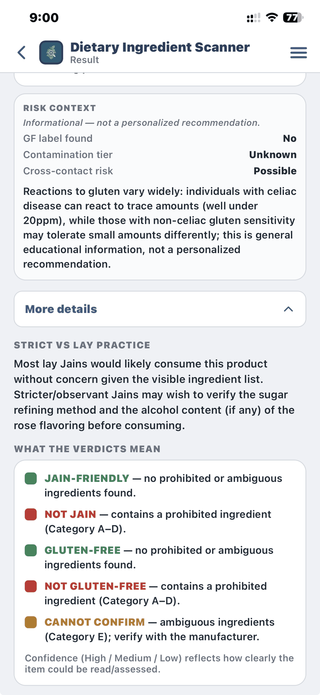

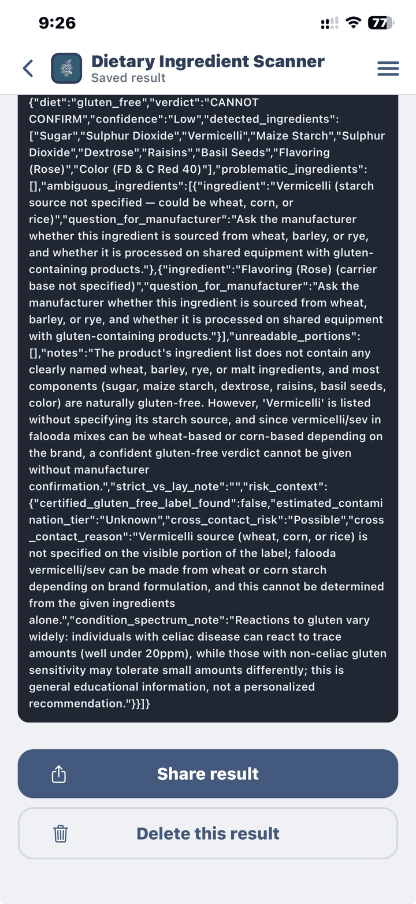
Appendix · BSettings
Open Settings from the hamburger menu to adjust anything covered in this chapter.
Language. Choose the app's display language — English, Hindi, Gujarati, or Marathi. This changes menus, buttons, and labels throughout the app. It's separate from the result language, which is set per scan on the Review screen and covered in Appendix C.
AI provider. All four supported providers are listed here, each showing whether a key is saved and whether the connection has been verified. Tap a provider's row to make it the active one. The steps below cover the three providers not walked through in the main chapters.
- Anthropic Claude — get a key at console.anthropic.com under Settings → API Keys → Create Key.
- OpenAI — get a key at platform.openai.com under API keys → Create new secret key.
- NVIDIA NIM — get a key at build.nvidia.com by signing in, opening any model, and choosing Get API Key. NVIDIA NIM also lets you pick which open-weight model to use (currently a choice of three) from a row of chips that appears once NVIDIA is selected.
In every case, paste the key into the field under that provider's section, then use Test connection to confirm it works.
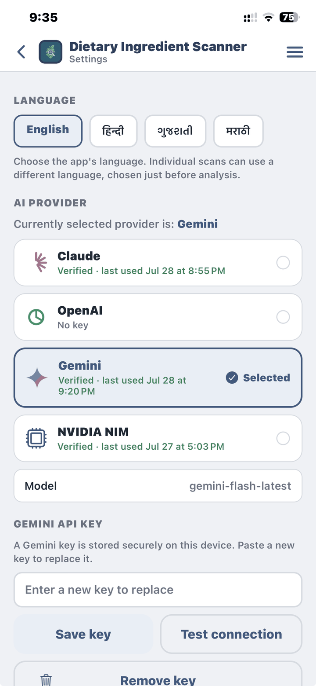
Dietary preferences. The same Jain / Gluten-Free toggle from setup, editable any time. At least one diet must always stay selected.
Strict observance. A toggle for Jain analysis that applies a stricter reading of the rules — useful for households that don't make exceptions for dairy, root vegetables, or fermented foods.
Location tagging. An optional toggle that attaches a coarse location label (like a city name) to saved scans, useful for remembering where an item was purchased.
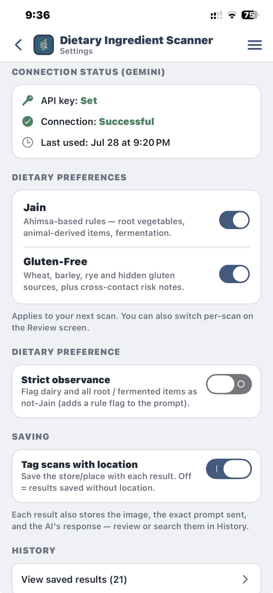
Appendix · CSwitching Languages
The app actually has two separate language settings, and it's easy to confuse them:
- App language (Settings → Language) controls the app's own interface — button labels, menu items, section headings. It affects every screen immediately.
- Result language (Review screen, just before you tap Analyze) controls only the language the AI writes its result text in for that one scan — the notes, reasons, and explanations inside the verdict. It defaults to match your app language but can be changed per scan without affecting anything else.
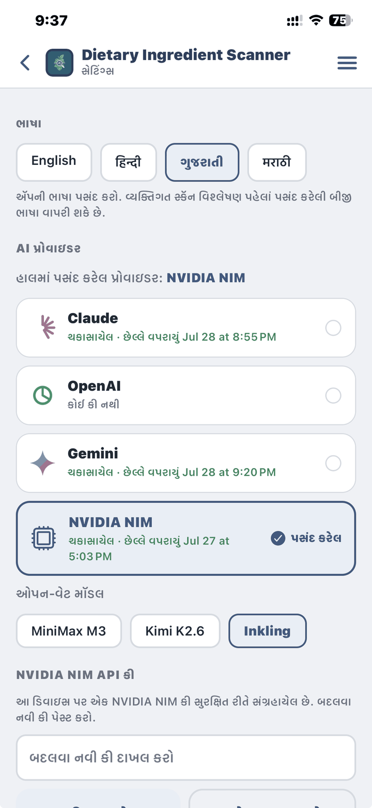
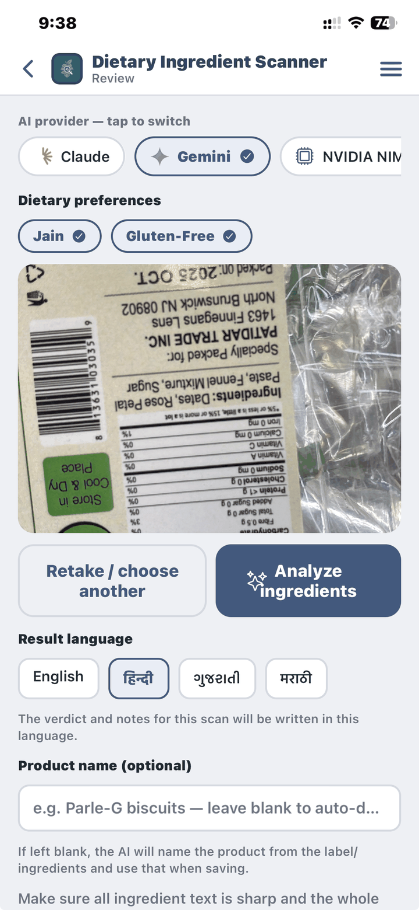
A completed result written entirely in Gujarati, as a real example:
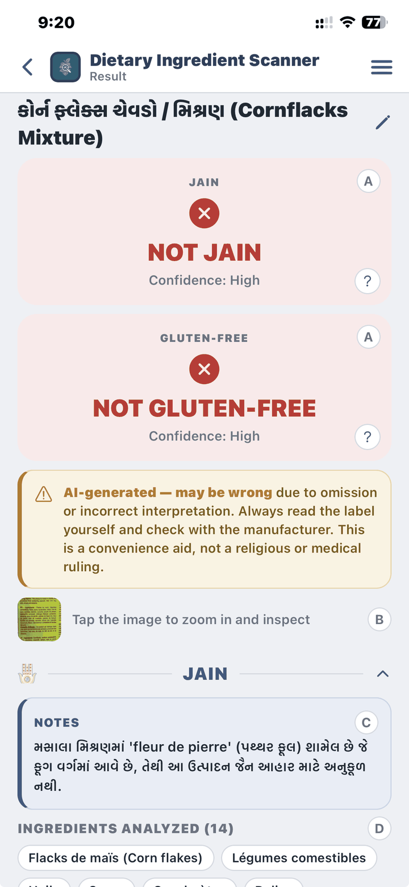
Appendix · DError Handling
Most problems the app can run into are shown as a plain message rather than a crash. Here's what the common ones mean and what to do about them.
No internet connection. The analysis can't be sent at all. Reconnect and try again.
"Your API key was rejected" (401 error). The key for your selected provider is missing, mistyped, or has been revoked on the provider's side. Go to Settings and re-enter or replace the key, then use Test connection to confirm it before retrying.
Rate limit reached (429 error). You've made more requests than your provider's plan currently allows in a short window. Wait a short while and try again, or switch to a different provider using the provider chip row if you have another key saved.
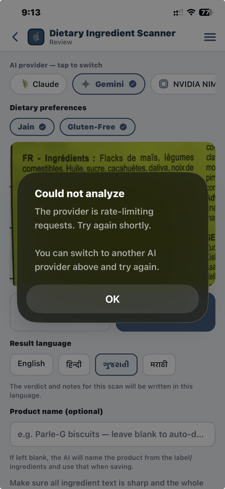
Provider temporarily unavailable (5xx error). The AI provider's own servers are overloaded or down — this isn't something the app can fix. The message usually says as much; retrying after a minute often works, or you can switch providers in the meantime.
Request timed out. If a response takes longer than 60 seconds, the app cancels it and lets you know. This can happen with a slow connection or an overloaded model — try again, or switch to a different model or provider.
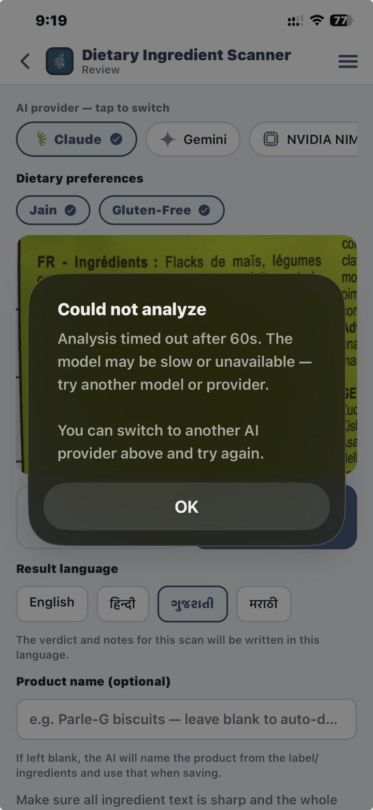
"Image unclear" or "not an ingredient label." This routes you to a separate Diagnostics screen instead of a result. It means the model couldn't find a readable ingredient list in the photo — often because of blur, glare, or an incomplete label. Diagnostics gives you a couple of framing tips and lets you retake the photo or choose a different one; nothing is saved to History from this state.
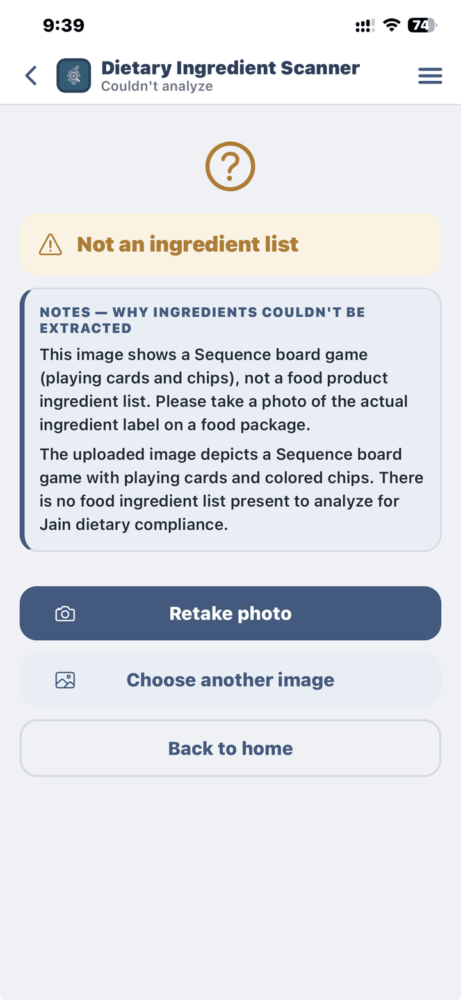
"No ingredients found" (Check by name). The model couldn't identify a reasonable ingredient list for what you typed — usually because the item was too vague or unusual. The message includes a way to view exactly what was sent and received, in case you want to see why.
Barcode not matched. This isn't an error — it's simply informational. Many regional and smaller brands aren't in the Open Food Facts database yet, so a "not found" barcode result just means the app will rely on the photographed label as usual.
Dietary Ingredient Scanner
| Author | Prakash Sachania |
| email@email.com | |
| Website | www.dietaryingredientscanner.app |
| X / Twitter | @dietaryscanner |
| @dietaryscanner | |
| GitHub | github.com/dietaryscanner |
All contact details above are placeholders for this wireframe — replace with real ones before publishing.